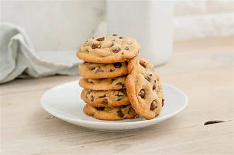

Ingredients
- 1 cup unsalted butter, softened
- 1 cup granulated sugar
- 1 cup packed brown sugar
- 2 large eggs
- 1 teaspoon vanilla extract
- 3 cups all-purpose flour
- 1 teaspoon baking soda
- 1/2 teaspoon salt
- 2 cups chocolate chips
- 1/2 teaspoon baking powder
Method
- Preheat oven to 350°F (175°C).
- In a large bowl, cream together the butter, granulated sugar, and brown sugar until smooth.
- Beat in the eggs one at a time, then stir in the vanilla extract.
- In a separate bowl, whisk together the flour, baking soda, baking powder, and salt. Gradually add the dry ingredients to the wet ingredients, mixing until well combined.
- Fold in the chocolate chips.
- Drop rounded tablespoons of dough onto ungreased baking sheets.
- Bake for 10-12 minutes or until the edges are golden brown. Allow the cookies to cool on the baking sheets for a few minutes before transferring them to wire racks to cool completely.